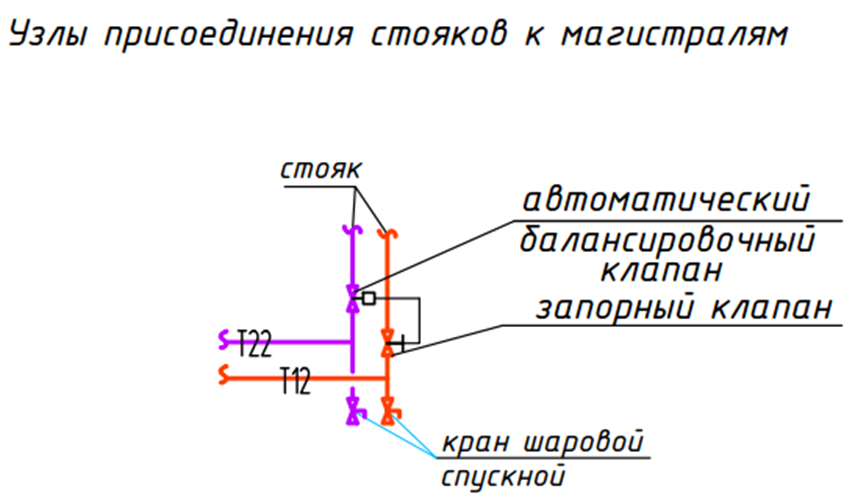
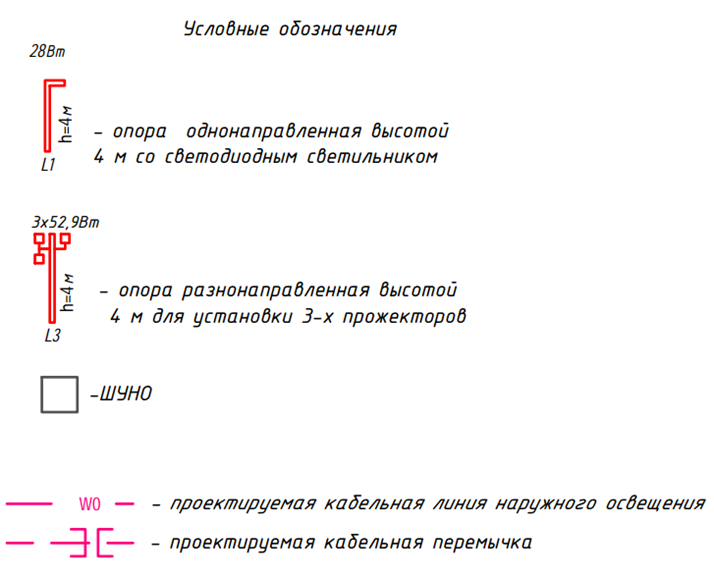
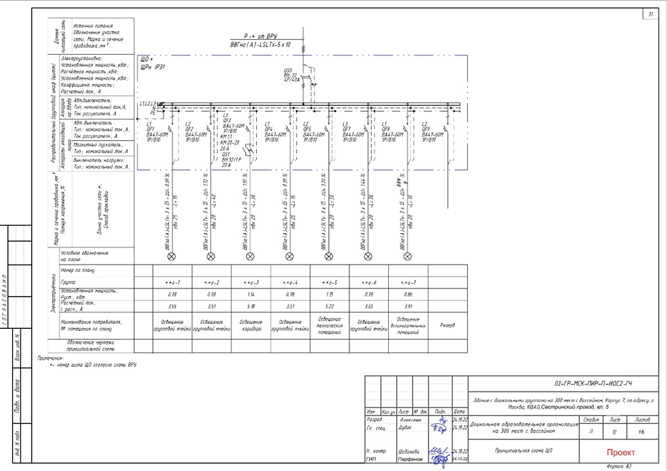

Графическая часть ПД

В этом уроке мы с Вами рассмотрим, как оформлять графическую часть проектной документации – а именно чертежи.
Основными графическими программами для проектировщика на сегодняшний день являются AutoCAD и Revit.
Рассмотрим основные требования к графическим материалам. Первое – это рамка, в которую помещается чертеж и его основная надпись. Так ГОСТ 2.301-68 устанавливает основные и производные форматы документов.
Все форматы листов мы собрали в таблицу.
| Кратность | Формат | ||||
А0 | А1 | А2 | А3 | А4 | |
1 | 841 x 1189 | 594 x 841 | 420 x 594 | 297 x 420 | 210 x 297 |
2 | 1189 x 1682 |
|
|
|
|
3 | 1189 x 2523 | 841 x 1783 | 594 x 1261 | 420 x 891 | 297 x 630 |
4 |
| 841 x 2378 | 594 x 1682 | 420 х 1189 | 297 x 841 |
5 |
|
| 594 x 2102 | 420 x 1486 | 297 x 1051 |
6 |
|
|
| 420 x 1783 | 297 x 1261 |
7 |
|
|
| 420 x 2080 | 297 x 1471 |
8 |
|
|
|
| 297 x 1682 |
9 |
|
|
|
| 297 x 1892 |
Размеры рамок и основной надписи приведены в ГОСТ 2.104-2006. Они должны быть на каждом чертеже.
Рамка – отступ 5 мм (слева - 20 мм для подшивки). Основная надпись находится в правом нижнем углу.
Масштаб, линии, шрифты или как сделать чертеж читаемым.
Все эти элементы регулируются ГОСТ 2.304-81 (шрифты), ГОСТ 2.303-68 (линии), ГОСТ 2.302-68 (масштабы) (можно презентацию сделать). Рекомендуемые масштабы для чертежей привели в таблице.
| Тип чертежа | Рекомендуемый масштаб |
| План этажа | 1:100, 1:200 |
| Узел (деталировка) | 1:20, 1:10 |
| Принципиальная схема | Без масштаба (функциональная) |
Сложные места выносите в фрагменты. Например, на плане 1:200 труба выглядит как нить – увеличьте масштаб до 1:100 или сделайте фрагмент 1:50.
Масштабы изображений на чертежах не указывают, за исключением чертежей изделий и других случаев, предусмотренных в соответствующих стандартах СПДС. В этих случаях масштабы указывают в круглых скобках непосредственно после наименований изображений в соответствии с ГОСТ 2.316-2008

Основные типы линий, которые используются в чертежах привели в таблице.
| Тип линии | Основное применение |
| Сплошная толстая | Видимые контуры, основные коммуникации |
| Сплошная тонкая | Размерные линии, осевые, сетки |
| Штриховая | Невидимые контуры |
| Штрихпунктирная | Осевые линии, центры отверстий |
Шрифты (ГОСТ 2.304-81)
Так как в проектной документации нет детализации чертежей, то используется очень много условных обозначений. С примером вы можете ознакомиться на картинке:

Также для Вашего удобства я подготовила файлы с условными обозначениями к каждой системе. Вы можете их скачать и применять в своей работе.
В графическую часть проектной документации включают принципиальные схемы проектируемой системы. Пример принципиальной схемы системы приведен на рисунке.

Полезные советы из практики при создании чертежей в ПД:
- Всегда используйте шаблоны. Это экономит время, исключает ошибки оформления
- Создайте свой стиль в Revit/AutoCAD. Все Ваши чертежи будут в едином стиле
- Проверяйте оформление перед отправкой. Список: рамка, подпись, масштаб, маркировка, диаметры;
- Обозначай узлы и фрагменты. Например: «См. узел 1-1, лист 142»
- Не бойтесь просить помощи. Даже опытные проектировщики сверяются с коллегами